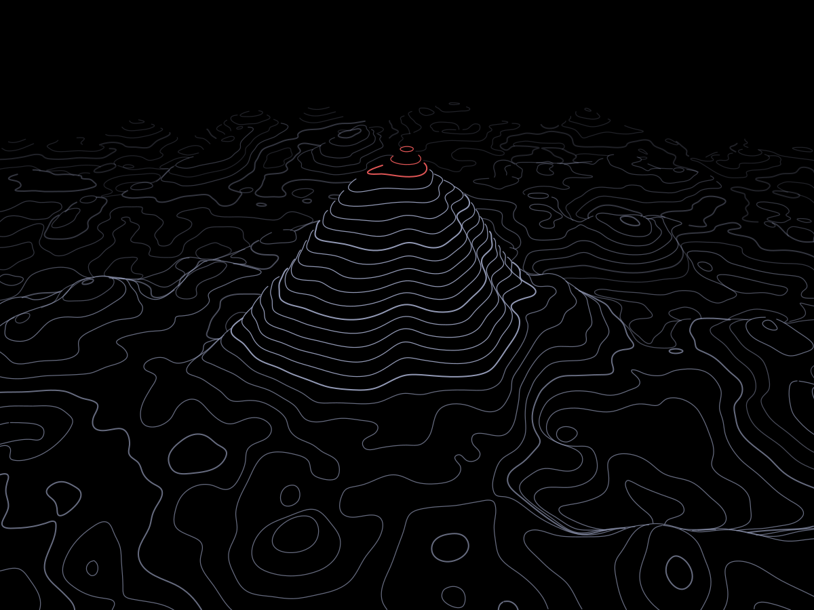
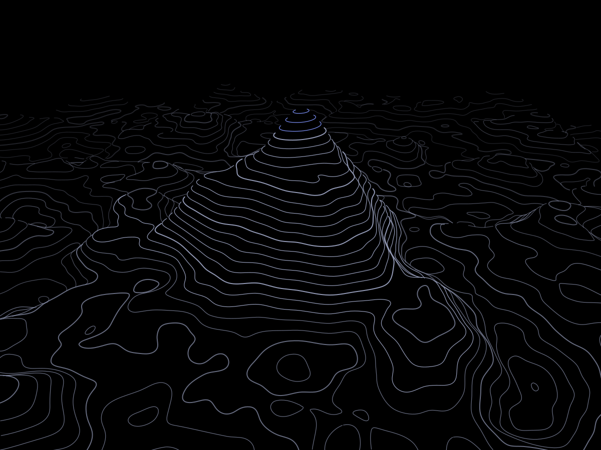

How we made the Tibba mountain

The first thing anyone sees on tibba.design is a mountain. It counts up from the valley floor, the camera drops into it, and a thin line climbs to the summit. The short version of how it got there: we built a generator, not a picture, and every mountain on the site now comes out of it.
Why a mountain
Tibba means a small hill. We have always described our work as climbing with a client: base camp, the ascent, the summit, and then the next peak. A mountain was the obvious symbol, which is exactly why it was hard. Obvious symbols go generic fast.
One rule
- No stock peaks: nothing anyone else could have drawn.
- No low-poly triangles: the shorthand every 3D mountain falls back on.
- No snowy photograph: it had to be drawn in the studio’s own language.
- Surveyed, not rendered: it had to move like it was being measured.
“We didn’t want a picture of a mountain. We wanted a map of one, that you could walk.”
Maps gave us the language
Topographic contour lines are honest: each one is a single height, and the spacing between them tells you how steep the ground is. Put enough of them together and a flat screen suddenly has a slope.
Building the landform
A recipe, not a model
Every mountain on the site, from the hero’s massif to the four client summits, comes from one generator we call the landform. A landform is a handful of parts summed together, each with a height, a spread and a sharpness.
What we cut into the cone
One part on its own is a smooth cone, and nobody believes a cone. The character comes from what we cut into it:
- Domain warp: pushes the ground sideways before it’s measured, so ridgelines bend instead of running straight.
- Spurs: long ridges that run down from the summit, like the fingers of a hand.
- Flutes: the narrow gullies between them, where rain would run off.
The Mountains lab
We tuned all of it in a small internal tool, the Mountains lab, with brushes for adding height, erosion passes, and a button that sends a preset straight into the hero. Most of the work was saying no: a ridge that looked dramatic in the lab often looked busy behind a headline.
From heightfield to contour lines
Marching squares
The landform gives us a height at any point. To draw it, we sample those heights on a grid and run marching squares over it: for every cell, we check which corners are above a given height and draw the short segment where the line must cross. Stitch the segments together and you get one contour.
–h, packed into a 4-bit case:– // one contour at height h, over a grid of samples
for (let y = 0; y < rows; y++) for (let x = 0; x < cols; x++) {
const c = (z[y][x] > h) | (z[y][x+1] > h) << 1
| (z[y+1][x+1] > h) << 2 | (z[y+1][x] > h) << 3;
if (c && c !== 15) segments.push(...edge(c, x, y, h));
}Lines that aren’t lines
- Ribbons: on screen each contour is a thin strip of triangles drawn by a shader.
- Width from slope: the ribbon can thicken or thin with the ground under it.
- Fade from distance: all of it without ever leaving the GPU.
Ink, light and air
The mountain lives in two states. In the loader it’s lit: the ribbons catch a soft light from above, the way a relief map does. As you scroll, it morphs to ink, flat lines on black, so it can sit behind text without fighting it.
- Aerial fade: dims the lines as they get further away.
- Pointer parallax: moves the camera a few pixels with your cursor, enough to make the ground feel like it has depth.
Walking the switchbacks
A crack, not a path
The trail was the last piece, and the one we redrew the most. Our first version ran straight up the slope. It looked like a crack, not a path. Real trails on steep ground zig-zag: long traverses across the face, a tight turn, and back.
The shape of the swing
The route is written around the summit. The distance from the top shrinks steadily as you climb, while the angle swings back and forth across the face.
- Sine: spends as long turning as walking, and reads as a squiggle.
- Rounded triangle: straight legs and hairpin turns, which is what we shipped.
“A path that repeats perfectly reads as drawn, not walked.”
That’s why the last trick is a little low-frequency wobble in both distance and angle, so no two legs of the trail are the same length. The trail draws on as you arrive and finishes on the studio’s mark at the summit.
Four more summits
The client summits are part of the same heightfield as the hero, which is why the home page’s mountain and the Our Work section look like one range seen from two places. Each summit is coloured for its client, and when you reach it, its own trail climbs from the trailhead to the top.
 Groww
Groww
Firstpost Breathe ESG
Breathe ESG
Shyft & MindhouseLeaving the browser
- Project: the heightfield is projected from the hero’s camera.
- Hide: lines behind the slopes are removed.
- Smooth: curves are fitted through what’s left. Every illustration is the real mountain, not a trace of it.
Making it light on phones
A live WebGL scene is a lot to ask of a phone on a train.
- Desktop: the live scene, contours, light and parallax.
- Phones: a short, pre-rendered film of the same mountain, made from the scene itself. It looks identical, loads in a fraction of the time and leaves the battery alone.
- Reduced motion: the mountain stays still. The contours tell the story without the camera moving at all.
What we learned
- Build the system, not the picture: because every mountain comes from one generator, a change to the landform shows up everywhere at once: the hero, the summits, the thumbnails and the share card.
- Restraint is a feature: most of our best decisions were removals. Fewer contours, a single accent colour, one trail instead of five.
The hours we spent on the generator paid for every illustration we didn’t have to draw. A mountain only needs one path to the top.
— The Tibba team